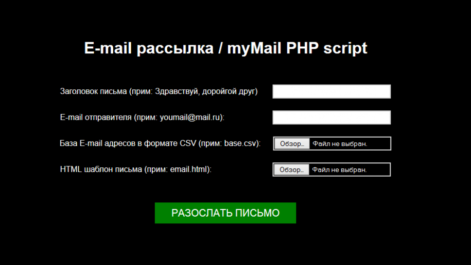
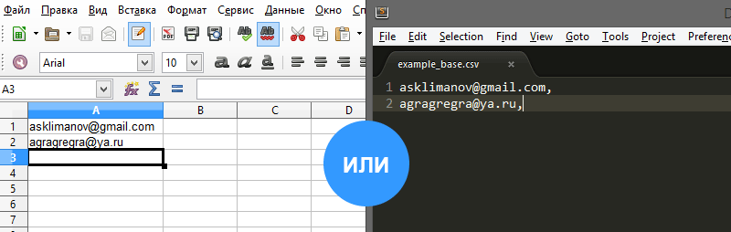

Массовая рассылка E-mail писем с рекламными материалами, предложениями, различными анонсами уже не один миллион раз доказала на практике свою эффективность. Продажи по E-mail имеют высокую эффективность и конверсию, по сравнению с конверсией из поискового или контекстного трафика.
Такая задача возникла и у меня - мне нужно было разослать предложение о сотрудничестве множеству компаний. Поискав в интернете я нашел 3 решения данной задачи. Первое решение - покупка специальной программы, второе - воспользоваться специальными сервисами Email рассылки и третий, весьма сомнительный - заплатить за рассылку человеку, обладающему необходимыми для этого предприятия ресурсами.
Ни один из способов меня не устроил: Первый и второй требует значительных затрат, а последний - весьма сомнительный. Мною было принято решение написать свой скрипт, который позволял бы мне делать безлимитные E-mail рассылки на адреса, которые находились бы в файле базы CSV – текстовая база данных.
Когда скрипт был написан - я решил его проверить на практике. Эксперимент состоял в следующем - я собрал все E-mail адреса компаний определенного направления в 2GIS, их всего оказалось 1200 - это мебельные компании, у которых в 2GIS не был указан адрес сайта. Задача рассылки - предложить всем мебельным компаниям мегаполиса, у которых нет сайта предложить такую услугу.
Результаты эксперимента:
Было отправлено письмо на 1200 адресов. Всего я получил на сайт 300 переходов и 15 компаний в результате общения заказали у меня разработку сайта. Как видите, скрипт прекрасно работает, с учетом того, что на создание предложения и сбор писем у меня ушло пол дня.
Технические моменты работы скрипта myMail PHP
Скрипт, как видно из названия, работает на PHP. То есть для рассылок вам необходим, как минимум, средний хостинг с доменом (подойдет и тестовый домен). Я использую самый дешевый тариф на SpaceWeb.
Интерфейс программы:
База E-mail адресов для рассылки
Для массовой рассылки вам необходимо подготовить базу E-mail адресов в формате CSV. Это простой текстовый файл с расширением .csv, который можно редактировать или в электронной табличке или в текстовом редакторе:
E-mail адреса разделяются запятой и переносятся на новую строку, это важно. Запятой адреса могут не разделяться, но перенос обязателен, если вы работаете с текстовым редактором. Количество адресов в базе - не ограничено.
Шаблон HTML письма для рассылки
Тут немного посложнее. Изначально вместо шаблона можно использовать простой файл с текстом предложения, но я так делать не рекомендую. Дело в том, что обычные письма пользователи просто удаляют, даже не прочитав. В архиве со скриптом вы найдете пример HTML письма, который я для вас подготовил. Если у вас не достаточно знаний в области создания E-mail предложений - советую вам воспользоваться услугами компетентных дизайнеров на фрилансе. Я беру в разработку такие проекты - одно письмо у меня стоит 800 рублей - дизайн и верстка. Эффективность красивых и ярких писем выше в разы, проверено на практике.
Кроме того, вы можете связаться со мной и проконсультироваться по любому вопросу по рассылкам.
Общие рекомендации для создания HTML писем:
- Не используйте подключаемые стили или стили в теге style, так как такие элементы вырезаются почтовиками. Все стили пишите инлайново style=”blabla:bla” у каждого элемента;
- Старайтесь верстать табличками;
- Максимальная ширина - желательно не больше 600 пикселей;
- Все, что касается письма должно находиться в одном HTML файле. Все картинки располагайте на вашем хостинге и делайте ссылки на них полным путем, вместе с доменом, на котором они находятся.
Есть еще несколько нюансов, но думаю запрос в Google “Как создать HTML письмо” поможет вам в решении этой проблемы.
Хостинг для рассылок
В среднем, у всех хостеров одинаковые ограничения на рассылку писем.
Уточните у вашего хостера, какие лимиты на отправку писем установлены. В среднем, у всех хостеров лимит писем составляет 1000 писем в час. Те письма из базы, которые не вошли в отправленную 1000 писем будут поставлены в очередь и по истечении часа будут отправлены. Отправлять повторно письма нет ни какого смысла, так как даже если у вас 10000 адресатов, все письма все равно будут доставлены через какое-то время.
Данный скрипт вряд ли пригодится офисным работникам, которые занимаются бухгалтерией, учетом инвентаря компании и взаимодействуют с интерфейсом программ только на уровне «клацнуть кнопку и готово», но если вы знакомы с HTML кодом и хорошо работаете на компьютере - вы можете делать вполне качественные рекламные рассылки самостоятельно, тем самым привлекая новых клиентов.
Скачать скрипт: myMail
Скрипт бесплатен. Спасибо за внимание, друзья. Желаю успешных рассылок и большой конверсии.
Премиум уроки от WebDesign Master


Другие уроки по теме «Инструменты»
- Настройка Parcel для веб-разработки
- Tailwind CSS для начинающих. Подробный урок по подключению, настройке и использованию
- Настройка VS Code для веб-разработки
- Starter - Простой стартер для веб-разработки
- Урок по хостингу от А до Я. Сайты, базы, домены, SSL, SSH, sFTP
- Gulp - Актуальное и исчерпывающее руководство для самых маленьких